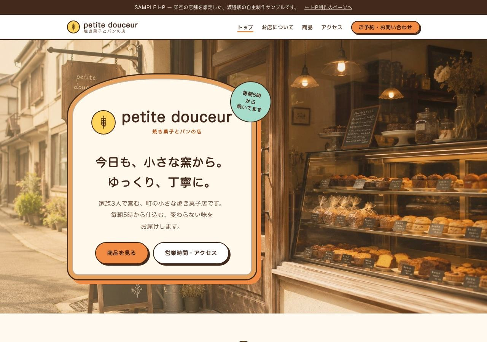
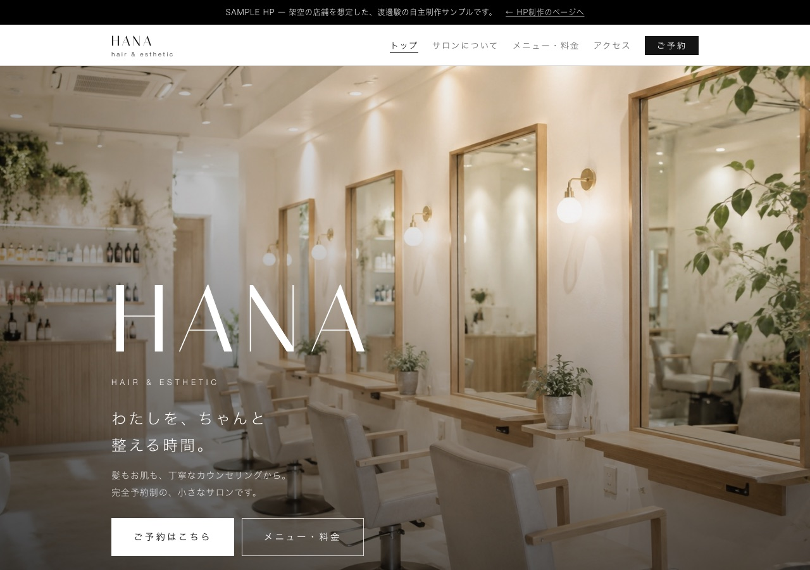
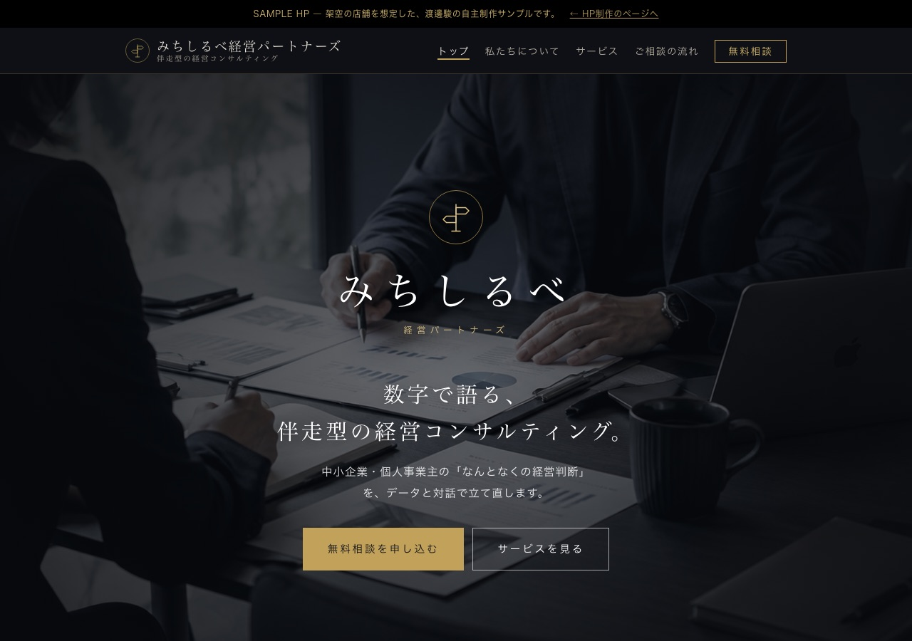
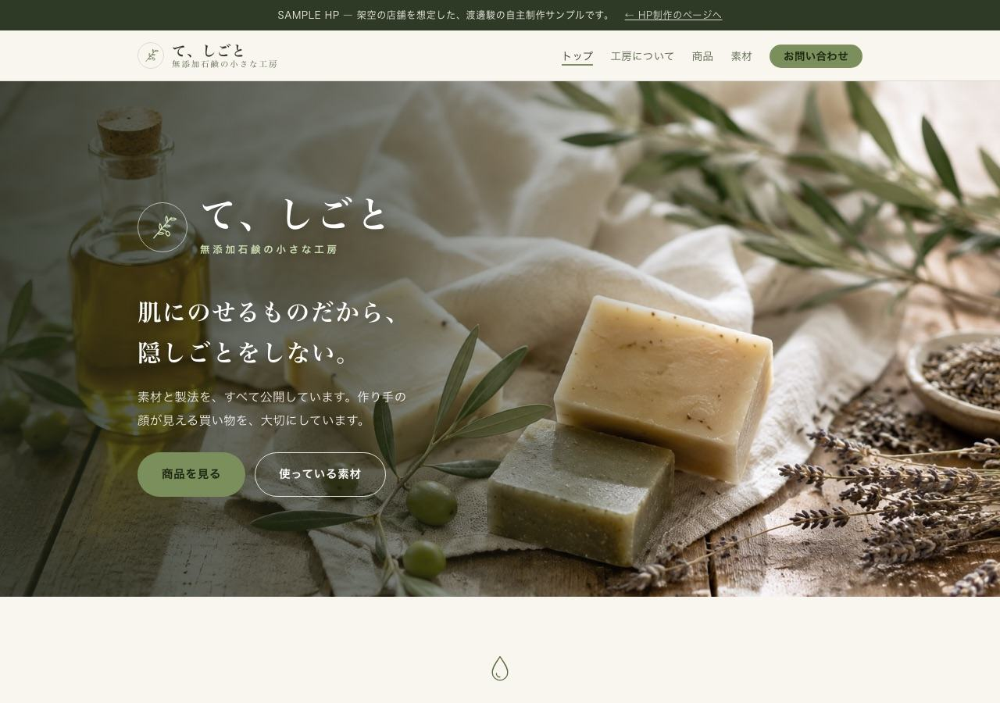

架空のお店や事務所を想定して作った、ホームページのサンプルを4つ公開しています。飲食店・美容サロン・コンサル・物販ブランドと、業種を変えて作りました。
どのサイトも5〜6ページ構成で、スマホでも読みやすい作りにしています。載せる項目は、同じ業種のお店のサイトを調べて決めました（スタッフ紹介、焼き上がりの時間、料金の目安、特定商取引法に基づく表記など）。雰囲気の違う見本として、「ナチュラル・やさしい」「シック・高級感」「ポップ・親しみやすい」「ミニマル・モダン」の4種類を用意しました。ご依頼の際は、「このサイトの雰囲気で」とお伝えください。画像をクリックすると、サイトが開きます。




※すべて架空のお店・事務所を想定した自主制作サンプルです。写真はLPサンプルと同じ画像を使い、ロゴや線画のイラストはサイトに合わせて作りました。
検索で見つけてもらうための、基本の設定をして納品します。
ホームページは、「◯◯市 パン屋」のように、地域の名前と業種で探されることが多くあります。お店の名前・住所・営業時間を、どのページでも同じ書き方にそろえることも大事にしています。
ページごとに、タイトルと説明文を書き分けます。検索結果で、中身が伝わる要約にします。
SEO記事を書いている経験から、「どんな言葉で探されるか」を調べて、見出しと本文に入れます。
大見出しは1ページに1つ。見出しの順番を整え、写真には内容が分かる説明（代替テキスト）を付けます。
スマホで読みやすい作りにし、写真は軽くして、表示を速くします。
シェアされたときに出る見出し・説明・画像を設定します。
住所・電話・営業時間を、検索エンジンが読み取れる形（構造化データ）でも書き込みます。Googleマップに載っている情報と、ずれがないかも確かめます。
| 表示の速さ | 97〜100点 |
| 見やすさ・使いやすさ（アクセシビリティ） | すべて100点 |
| 安全で正しい作り（ベストプラクティス） | すべて100点 |
※サンプルは架空のお店なので、検索結果には出さない設定（noindex）にしています。それ以外の設定は、各ページのソースで確かめられます。
何をどの順番で伝えるかを先に決めてから、ページを作ります。
写真に店名と言葉を重ね、開いてすぐに「何のお店か」が分かるようにしています。
文字の大きさや改行の位置を、スマホの画面で確かめながら整えています。
ご相談は、こちらからどうぞ。「こんなこと頼めるかな」という段階でも大丈夫です。
> CONTACT